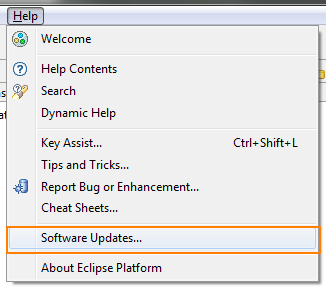
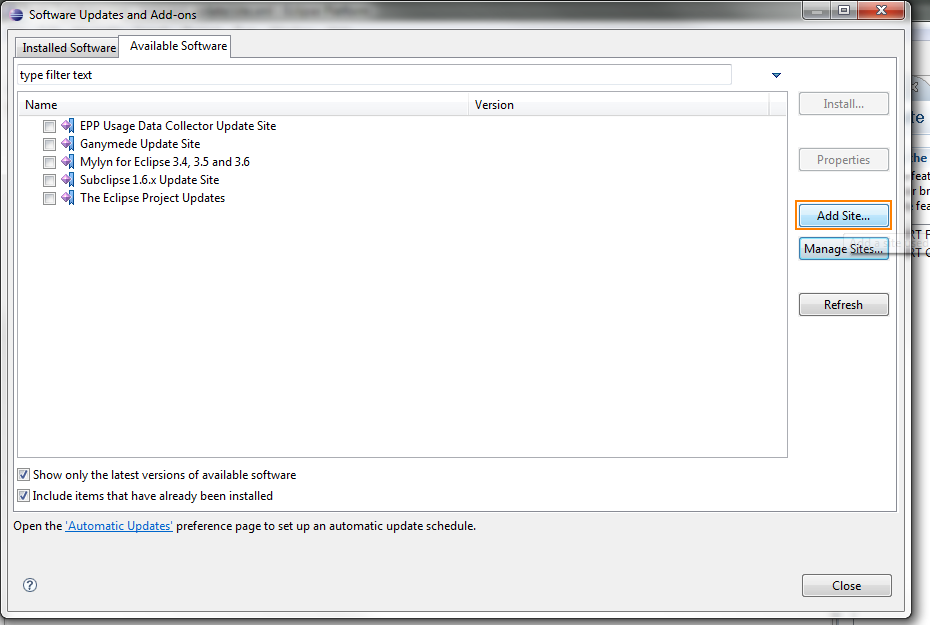
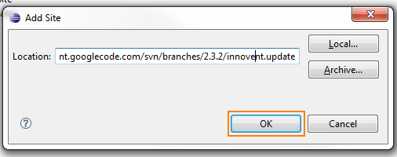
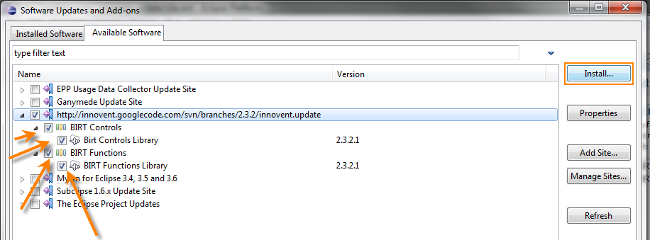
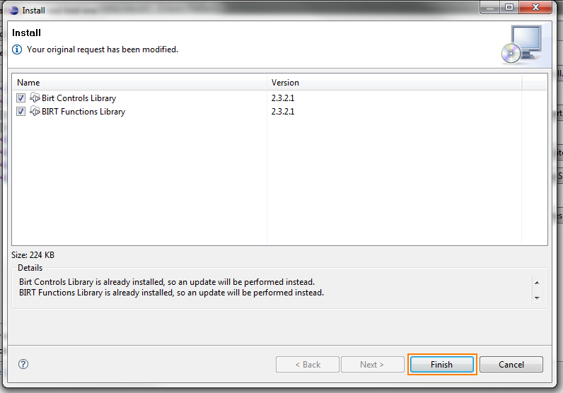
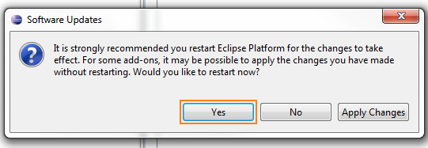

First thing is to go to the Help menu and select Software Updates.

You will then see the Eclipse Update Manager dialog. You need to select the Available Software tab, and then click Add Site.

On the update site dialog, add the following URL
http://steveschafer-innovent.github.io/2.3.2

You should now see the innovent update site, you need to select the check boxes for the items you would like to install, and then press the Install button in the upper right corner.

You are then given a dialog showing what controls will be installed (after the dependencies have been analyzed).

Finally, after the software has downloaded and been installed you will be asked to restart, which you should do.
